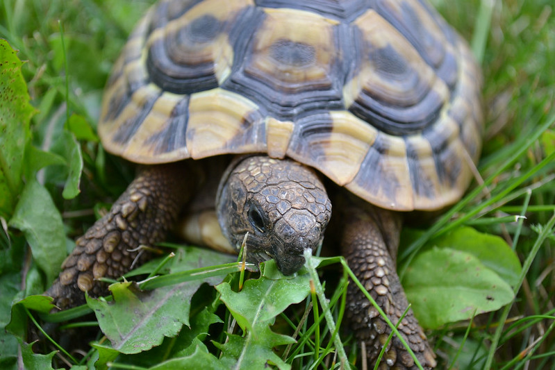

| Photo |
Name |
Gender/Breed |
Age |
Details |
 |
Jack and Annie |
Male & Female
Brother & Sister
Mix |
6 Weeks |
Jack and annie are playful and adorable! |
 |
Sam |
Male
Orange Mix |
3 Years |
Sam is a calm kitty who is great with children and other animals, but not with dogs. |
 |
Jellybean |
Female
Gray Tabby |
2 Years |
Jellybean was found in a storm drain, but loves people. |
 |
Greyson |
Male
Gray Mix |
10 Weeks |
Greyson is high energy and high cuddles! |
 |
Cocoa |
Female
Chocolate Labrador |
20 Weeks |
Cocoa is sweet as pie and loves to give kisses. |
 |
Roscoe |
Male
Corgi/Chihuahua Mix |
8 Years |
Roscoe is an older, house trained dog whose owner had to surrender him. He is ready for a home! |
|  |
Sheldon |
Male
Box Turtle |
1 Year |
Sheldon likes to sit in the sun, and doesn't bite! |